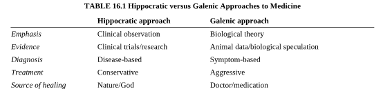

20 질병 중심 치료와 증상 중심 치료
Disease oriented or symptom oriented treatment
20.1 질병 중심 치료와 증상 중심 치료
20.1.1 서양의학 전통을 흐르는 두 가지 가치관
조현병의 약물 치료를 논하기 전에, 과연 우리가 치료하고자 하는 것이 무엇인지를 먼저 규명하는 작업이 선행되어야 한다. 치료의 목표를 제대로 정해놓지 않으며 이후의 논의는 길을 잃게 되고, 가열찬 논쟁이 알고보니 근본적 전제의 차이에서 비롯되었다는 어이없는 사태가 벌어지기도 한다.
그러나 정작 이를 고민해보기 시작하면 시작부터 혼란에 빠지게 된다. 예를 들어 암의 경우 치료 목표가 무엇일까? 어떤 의사는 암세포의 사멸을 우선 시 할 것이요, 다른 의사는 생존 기간의 연장을 내세울 지도 모른다. 아마 또 다른 의사는 살아있는 동안 삶의 질 향상을 최우선으로 여길 수도 있겠다. 셋 다 의사가 온전히 추구해야 하는 바람직한 목표이지만, 하나의 목표를 앞세우다 보면 다른 목표를 놓치게 된다. 암 세포의 철저한 사멸을 노려 무리한 수술과 공격적인 항암 요법을 했다가 삶의 질을 망가뜨릴 수도 있다. 또한 생존 기간을 억지로 늘이기 위해 환자에게 고통스럽고 무의미한 삶을 강요하게 될 지도 모른다.
이러한 극단적인 예가 아닐 지라도 조현병의 치료 역시 유사한 딜레마에 봉착한다. 조현병이라는 질병을 완치시키기 위해서는 과감하고 공격적인 치료가 필요한 것일까? 아니면 삶의 질을 최우선하여 무리하지 않는 선에서 타협해야 하는가? 동반 증상을 조절하기 위해 다양한 약제를 동시에 투여해야 할까? 아니면 조현병만 해결되면 동반된 증상은 자연히 해결되리라 믿고 단일 약제 사용을 고집해야만 할까? 정신과 환자를 처음 보게 되는 초심자는 물론 경험많은 의사들 역시 이런 종류의 딜레마에서 자유롭지 못하며, 일관된 철학없이 상황과 편리에 따라 치료에 임하는 스스로의 모습을 발견하곤 한다.
20.1.1.1 히포크라테스와 갈레노스
이러한 딜레마는, 서양 의학의 뿌리를 형성하는 두 가지 철학, 즉 히포크라테스 식 접근과 갈레노스 식 접근에서도 찾아볼 수 있다.[1]

히포크라테스(Hippocrates)는 기원전 400년 경 활약한 그리스의 의사로, 의사라는 직업인의 이상적인 전형으로 칭송받고 있다. 그의 임상 의사로서의 혜안과 통찰은 서양 의학에 막대한 영향력을 행사했으며, 윤리적 측면에서도 히포크라테스 선서를 통해 그 유지가 내려오고 있다.1
1 소위 히포크라테스 의학집성(Hippocratic Collection)은 히포크라테스와 동시대에 그와 함께 일하던 의사들의 저작을 모아 놓은 기록이다. 고대 그리스의 기록이 단편적으로 내려오다가 1527년 로마의 Marco Fabio Calvo에 의해 라틴어로 번역 출판되었으며, 이후 점점 더 많은 문서들이 발견되고 합쳐지면서 현대에 이르게 된다. 전승 중에 많은 부분이 첨삭, 소실되었으며, 따라서 실제로 히포크라테스가 어떤 말을, 어떤 맥락에서 했는 지는 베일에 가려져 있다.
한편 갈레노스(Claudius Galenus)는 히포크라테스 보다 약 5-600여년 후에 활동한 로마 시대의 의사로, 히포크라테스가 고대 의학의 출발점이라면 갈레노스는 그 완성자로 알려져 있다. 네명의 로마 황제의 주치의를 지냈으며, 역시 많은 저작을 남겨 “갈레노스 전집”의 형태로 현재까지 내려오고 있다.
두 사람이 활동한 시대는 수백년의 시간 차이가 있으나, 이들의 저작이 재발견된 것은 모두 르네상스 시대로, 근대 의학의 태동기에 서로 대등한 영향을 끼쳤다고 볼 수 있다. 두 사람 모두 미신과 신앙으로 점철된 원시 의학을 배격하고, 자연주의 철학 하에서 실증 가능한 사실을 토대로 지식을 쌓아나갔다는 공통점이 있다. 그러나 둘 사이에는 미묘한 차이가 있으며 이는 서양 의학의 전통에 있어서도 은근한 균열을 싹 틔웠다.
갈레노스는 인간 해부가 금지되었던 당시, 가축이나 원숭이의 해부를 통해 인체 구조와 생리에 대한 기본 지식을 축적하였다. 동물의 장기 구조와 생리 현상을 관찰함으로써 인체의 구조와 기능을 추론하였고, 이러한 기능이 제대로 발휘되지 않는 것이 건강을 잃은 상태라고 생각하였다. 즉 따로 질병의 존재를 상정하지 않고도, 의학의 역할을 분명히 규정한 셈이다. 자연히 치료의 대상은 개개 증상과 징후가 되었으며, 이상적 건강 상태로 되돌리기 위해 상당히 적극적이고 공격적인 치료를 행하곤 했다.
흔히들 히포크라테스의 의료 철학을 한 마디로 축약한다면 “환자에게 해를 입히지 말라 (First, do no harm, 라틴어로는 Primum non nocere)”가 된다고 여긴다. 그러나 이 말을 히포크라테스가 실제로 했는 지도 분명하지 않을 뿐더러, 많은 이들은 생각하듯이 이 경구가 환자의 안전을 우선적으로 생각하라는 의료 윤리의 토대인 것도 아니다.2 히포크라테스가 실제로 한 말은 그보다는 “질병에 대해서 돕고자 애써라, 적어도 해는 가하지 말라”에 가깝다. 히포크라테스가 활약하던 시절은 갈레노스 시절보다도 수백년 전이었기 때문에 아직 동물 실험을 할 준비가 되어있지 않았고, 가용한 연구 대상은 그저 자신을 찾아오는 환자들에 대한 면밀한 임상적 관찰 뿐이었다. 치료가 듣는 지 안 듣는지는 인체 구조와 기능에 대한 장대한 이론이 아니라, 철저한 결과 관찰을 통해 결정되었다. 효과적인 치료법이 그리 많지 않다는 것을 알기 때문에, 개개 증상을 치료하려고 애쓰기 보다는, 증상이 중대한 질병의 결과라고 여겨지는 경우에만 치료를 시도하였다. 또한 신의 가호와 인체의 회복력을 믿었기 때문에 휴식과 섭생을 통한 자연 치유를 기다렸으며, 경험적으로 확실하지 않은 치료는 행하지 않았다. 요약하면 치료의 타겟은 개별 증상이 아니라 어디까지나 질병이었다. 현대적으로 번역하면, 진단이 확실해질 때까지 면밀히 관찰하며 서두르지 않고, 질병임이 확실한 경우에만 증거중심의학의 기반 하에 찾아진 치료법을 사용한다 정도가 될 것 같다.
2 “Primum non nocere” 라는 라틴어 경구는 Thomas Inman의 저서인”Foundation for a New Theory and Practice of Medicine” 에 처음 등장하며, Thomas Sydenham(1624–1689)에 의해 발언된 것으로 기록되어 있다. 실제로 히포크라테스 학파의 저술 중에 등장하는 이에 가장 근접한 표현은 “역학 1권”에 등장하는 “Practice two things in your dealings with disease: either help or do not harm the patient”, 라틴어로는 “Duoque ista elaboranda sunt, ut in morbis commodes aut ne quid offendas”라는 표현이다. 이 역시 히포크라테스가 직접 한 말인지는 분명하지 않다.
현대 의학의 관점에서 본다면, 히포크라테스와 갈레노스적 접근은 질병 중심 치료와 대증적 치료의 양대 흐름이라고도 볼 수 있다. 일부 의사들은 환자의 고통을 경감시키고, 가능한 한 정상적인 삶으로 되돌리려 애쓰는 것을 이상적인 치료로 여기며, “증상이 아니라 질병을 치료하라”는 Osler3의 경구는 정신의학에 적용되지 않는다고 주장한다.[3] 한편 다른 의사들은 정확한 진단과 함께, 질병을 근원적으로 치료하는 것이 의사의 책무라고 여긴다.[1] 증상은 치료의 대상이 아니라, 질병의 존재를 암시하는 지표일 뿐이다. 개개 증상에 대해 약물을 쓰기 시작한다면 진단의 의미가 없어질 뿐더러, 히포크라테스 의료 윤리에서 가장 경계시하듯 환자에게 해를 끼칠 우려가 있다.
3 William Osler (1949-1919): 캐나다 출신의 의사로 존스 홉킨스 의과대학을 세운 창립멤버 중 하나이다. 레지던트 프로그램은 물론 의과대학 학생의 병실 실습도 그가 처음 시작하였다. 타고난 교육자로 서양 의학에서는 “현대 의학의 아버지 (father of modern medicine)”라고 불리운다.
20.1.2 조현병의 질병분류학적 지위
일반 의학에서 대증적 치료(symptomatic treatment)라는 것은, 마땅한 치료법이 없거나 해당 질병에 대한 의학적 지식이 턱없이 부족할 때 어쩔 수 없이 사용하는 차선책으로 여겨진다. 그 때문에 흔히 보존적 치료(supportive treatment) 혹은 완화 치료(palliative care)와 동일한 의미로 간주되기도 한다. 심지어 진단을 놓치고 근본적인 치료를 행하지 못하는 것은 의사 자신의 무지를 드러내는 것으로 윤리적 책무를 다하지 못한 것으로 비난 받기도 한다. 그러나 정신의학에서는 역으로 질병분류학적 단위 (섹션 1.3)의 실재를 맹신하는 것이 오히려 혼란을 가중시켰다고 비난 받기도 한다.[4] 한가지 사례로 주의력결핍 과잉행동장애의 경우, 이것이 엄밀한 생물학적 기반을 지닌 타당한 질병단위인지, 단지 어른의 기대에서 벗어난 아이들을 지칭하기 위해 사회적으로 합의된 이름표일 뿐인지 여전히 논란의 대상이 되고 있다.[5,6]
조현병은 이러한 논란의 와중에 어떤 위치를 차지하고 있을까? 본서의 존재 자체가 조현병의 확고한 질병분류학적 지위를 인정한다는 것을 내포하고 있지만, 반성의 여지가 없는 것은 아니다. 적지 않은 학자들은 다른 많은 정신과 질병명처럼 조현병 역시, 증상 들의 특별한 군집 형태(즉 증후군)에 편의를 위해 명칭을 붙인 것에 지나지 않는다고 주장한다. 네덜란드의 정신역학 연구자인 van Os는 과감하게 조현병은 존재하지 않는다고 주장한다.[7] 그는 재발 때마다 조금씩 다른 증상 특징을 보이는 환자에게 그가 앓고 있는 병에 대해 이렇게 설명하는 것이 바람직할 것이라고 주장한다. “당신은 정신증과 조증의 증상을 동시에 보입니다. 따라서 이번 삽화를 우리는 조현정동장애라고 분류할 것입니다. 하지만 다음 삽화에서 정신증상이 사라진다면, 우리는 양극성 장애라고 병명을 바꿀 것입니다. 역으로 조증 증상이 사라지고 정신증상이 만성화된다면, 아마도 조현병이라고 진단을 내려야 되겠지요.” 정성훈[8]은 조금 다른 관점에서 역시 조현 병의 존재 여부에 대해 질문을 던진다. 그에 따르면, 질병분류를 포함한 모든 인위적 분류 체계는 계층적 구조(hierarchical structure)를 지닌다. 따라서 조현병의 위에는 좀더 포괄적인 상위 분류가 있고, 아래에는 좀더 지엽적인 하위 분류가 존재하며, 조현병이라는 명칭이 그 보다 상위 혹은 하위 계층에 비해 특수한 지위를 지니는 것은 아니다. 그러나 인간은 계층 구조와 동시에 가족 유사성4에 의한 분류라는 인지경향을 동시에 적용하기 때문에, 여러 단계의 계층 구조 중에서 조현병을 가장 친숙한 자연적 종(natural kind)으로 인식한다. 즉 불독, 셰퍼드, 치와와, 푸들 등 다양한 개의 품종이 있지만, 인간은 개(dog)를 그 대표적인 분류로 여기고 이를 자연적 종으로 삼는 것과 마찬가지이다.
4 가족 유사성(family resemblance): 오스트리아의 철학자인 Ludwig Wittgenstein (1889~1951)이 제시한 개념이다. 이에 따르면 특정한 범주를 규정하는 본질은 있을 수 없다. 다만 이 범주에 포함되는 여러 현상들 사이에 서로 중첩되는 공통점만이 있을 뿐이다. 예를 들어, “어머니”라는 범주에는 직접 나를 낳아준 어머니 외에도 난자 제공자, 어린 시절 키워준 사람, 아버지와 결혼한 사람, 배우자의 어머니 등 한가지 정의로 묶을 수 없는 다양한 경우가 포함된다. 이들은 모두 가족 유사성을 띠고 있으며, 대부분의 사람은 이들이 모두 “어머니”라는데 불편함을 느끼지 않는다.
20.1.3 정신병리의 네트워크적 모델
몇년 전 네덜란드 암스테르담 대학교 심리학과를 중심으로 제안되기 시작하여 전세계적으로 큰 반향을 일으키고 있는 정신병리의 네트워크적 모델(network model of psychopathology)에서는, 일군의 증상들이 서로 군집을 이루어 나타나는 이유를 조금 색다르게 설명한다.[9–12] 기존의 질병분류학적 모델에서는 그러한 증상들이 단일한 기저 질환의 발현이기 때문에 함께 나타난다고 해석되었으나, 네트워크 모델에서는 증상들이 각각 서로에게 영향을 끼쳐 양성 되먹임을 이루고, 한번 이런 식으로 결집된 증상군들은 쉽게 해체되지 않기 때문이라고 설명된다. 즉 실재하는 것은 증상들간의 동적인 관계 뿐이요, 굳이 잠정적인 질병의 존재를 가정할 필요가 없어진다는 논리이다. 이 이론에 의하면 치료의 대상은 잠복해있는 질병이 아니라, 증상과 증상 간의 연결고리이다. 개개 증상, 그 중에서도 연결 고리 상에서 중요한 위치에 자리잡고 있는 증상을 집중적으로 치료하면, 전체 연결고리의 결집력이 약해지면서 우리가 질병이라고 인식하고 있던 증상군이 자연히 해체된다.
일례로 독일과 스페인의 공동 연구로 진행된 한 연구에서는 초발 환자들을 대상으로 기본 증상5, 경감된 정신증상, 확고한 정신증상의 세 가지 범주에 속하는 증상들의 네트워크 구조를 분석하였다.[13] 그 결과 기본 증상 범주에서는 사고 압박, 사고 방해, 청각 자극에 대한 과민성이, 확고한 정신증상 범주에서는 과대 망상을 제외한 망상, 환청, 그리고 해체된 의사소통이 중심적 위치를 차지하고 있는 것으로 나타났다. 이들 소위 교량 증상6 들은 전구기 증상이 확산되어 질병으로 자리잡는 과정에서 핵심적 요소이자, 이러한 진행을 막기 위한 치료의 일차 타겟으로 평가되었다.[14]
5 기본 증상(basic symptom): 기본 증상이란 조현병 환자가 주관적으로 겪게 되는 미묘한 변화로 아직 정신병적 증상이라 할만한 단계에 이르지 못한 전구기 증상을 의미한다. 사고, 언어, 욕동, 정서, 지각, 인지기능 등 정신 현상 전반에 걸쳐 나타난다. Gerd Huber를 중심으로 한 독일어권 정신의학자들을 중심으로 연구되었으며, 조기 정신증 연구가 활발해지면서 재조명되었다.
6 교량 증상(bridge symptom): 네트워크 이론에서는 네트워크를 구성하는 개개 요소를 node, 요소와 요소와의 관계를 edge라고 부른다. 하나의 node는 네트워크 상에서 어떤 위치에 놓이느냐에 따라 행사하는 영향력이 결정된다. 예를 들어 node A가 다수의 node들과 연결되어있다면, A를 중심 노드(central node)라고 하며 큰 영향력을 행사한다고 볼 수 있다. 이번에는 몇 개의 node 들이 서로 긴밀하게 연결된 부분 네트워크(subgraph)가 또한 몇 개 존재한다고 하자. 그런데 이들 subgraph들은 다른 subgraph 들과 그다지 연결을 많이 맺고 있지는 않았지만, 공통적으로 node B라는 연결고리를 통해 연결되어 있다고 하자. 그러면 node B는 그 자신이 다수의 node들과 연결되어 있지 않다 해도, 전체 네트워크에서 매우 중요한 위치를 차지한다. 이런 node를 교량 노드(bridge node)라고 한다.
이렇듯 일반 의학에서는 이상적인 의료 행위로 추구되는 히포크라테스 식의 질병 중심 치료와는 달리, 지금까지의 정신의학은, 혹은 앞으로의 정신의학 역시, 갈레노스 스타일의 증상 중심의 치료 형태에 머무르고 있다. 엄밀한 의미에서 지금까지 사용되어온 항정신병 약물 중심의 치료 역시 환각, 망상 등 양성 증상을 치료하는데 그치고 있으며, 조현병 자체에 대한 치료라고 말하기에는 어폐가 있다. 최근 등장한 참신한(novel) 항정신병 약물 역시 음성/인지 증상에 좀더 효과가 있다고는 하나, 이 역시 증상 중심의 치료라는 점에서는 크게 다르지 않다. 따라서 본서에서는 질병 자체에 대한 히포크라테스 식 접근은 궁극적으로 추구해야할 이상으로 남겨놓고, 실제로는 개개 증상에 대한 치료에 초점을 맞춰보고자 한다.
20.2 진단과 증상
20.2.1 진단의 중요성
정신질환의 약물 치료를 꾀할 때 증상을 우선시한다면 다음으로 고려되어야 할 것은 타깃 증상(target symptom)을 결정하는 것이다. 어떤 증상이 치료될 수 있고 또 어떤 증상을 우선적으로 치료해야 하는가? 증상의 자연 경과는 어떻고, 해당 증상이 치료되지 않으면 나중에 어떤 영향을 미칠 수 있는가? 개개 증상에 효과적인 치료법은 무엇이고, 치료 성과는 어떻게 평가되어야 하는가? 안타깝게도 이러한 질문에 참고할 만한 자료를 찾기는 쉽지 않다. 왜냐하면 이런 질문에 대한 고찰은 대체로 진단명을 중심으로 논의되어 왔기 때문이다. 증상을 타깃으로 한다고 해도, 여전히 진단의 맥락 속에 있는 증상을 치료의 타깃으로 삼을 수 밖에 없다.
정신병리학자인 Andrew Sims7는 이렇게 말한다.
7 Andrew Sims: 영국 Leeds 대학의 정신과 교수이다. 소개된 “마음의 증상과 징후 (Sims’ Symptoms in the Mind)”는 1988년에 초판이 발행되었으며, 기술 정신의학에 있어 대표적인 개론서로 알려져 있다.
진단명이란, 단순히 기분 내키는 대로 선택되어 불행한 환자에게 붙여지는 이름표에 불과한 것이 아니다. 이는 현 상태를 일으킨 선행 사건에 관한, 유사한 다른 상태들에 관한, 그리고 가장 중요하게는 앞으로 일어날 일에 관한 의미를 전달해주며, 따라서 취해야 할 조치를 제시한다. 진단명은 의료진 사이에서 의사소통의 수단이 될 수 있어야 하며, 환자에 대해 설정된 가설 전체를 포괄할 수 있어야 한다.[15]
정신장애의 진단 및 통계 편람(Diagnostic Statistical Manual of Mental Disorders, DSM) 3판이 만들어진 배경의 하나는 정신약물학의 발전에 따라, 체계적이고 신뢰성 있는 진단 기준이 필요해졌기 때문이다. 2장에서 서술했듯이 표준화된 진단 기준의 정립은 임상 시험을 통해 증거를 축적할 수 있도록 도왔고, 효과적인 치료와 그렇지 않은 치료를 구분할 수 있는 잣대를 마련해주었다. Sims가 꿈꾸었던 이상적인 진단명 처럼, DSM과 ICD에 등재된 조현병이라는 진단명은 치료 반응, 경과 및 예후를 추정하는데 있어 여전히 믿음직한 개념틀이다.
다만 조현병이라는 진단명 혹은 DSM에 나열된 진단기준이 기저의 생물학적 원인 또는 병태생리를 반영하는 것이 아니라 그저 관찰되는 현상을 나열하는데 그치고 있다는 점이 아쉽다. 개개 증상들은 왜 함께 나타나는가? 하나의 증상은 왜 다른 증상들로 확장되며, 왜 어떤 증상은 다른 증상에 비해 나쁜 경과를 시사하는가? 각각의 증상은 고유한 뇌 내 변화때문에 생겨나는 것인가? 아니면 개인적 체질이나 환경의 차이에 따라, 동일한 뇌 내 변화가 서로 다른 양상으로 발현되는 것인가?[16] 조현병 환자들은 모두 정신병적 증상을 보이지만 그 조합은 너무도 다양하다. 더군다나 비정신병적 증상은 더욱 더 예측하기 어렵다. 증상이 심하다고 해서 꼭 예후가 나쁜 것도 아니다. 짧은 기간 내에 증상이 소실되어 기능을 회복하는 환자도 있지만, 인격이 황폐화된 채 평생을 사는 환자도 있다. 신경생화학적으로는 여전히 도파민 때문이라고 하지만, 모든 증상이 도파민 때문만은 아니다. 게다가 조현병을 일으킨다고 내세울 만한 유전자가 확인된 적도 없다. 조현병이라는 진단이 특정되지 않은 조현 스펙트럼, 그리고 기타 정신병적 장애(unspecified schizophrenia spectrum and other psychotic disorder)와 어떻게 다른 것인지도 명확하지 않다. 의도했던 아니던 조현병이라는 진단명에는 궁극적인 치료저항성과 불량한 예후에 대한 체념이 깃들어 있다. 이런 점을 의식한 듯 조현병 대신에 조현 스펙트럼 장애와 같은 애매모호한 진단명을 붙이는 일이 점점 더 늘어나는 추세이다.[17,18]
그럼에도 불구하고 조현병이라는 진단명과 감별 진단의 중요성은 포기할 수 없어 보인다. 여러가지 한계와 단점에도 불구하고, 진단은 진실에 접근하기 위해서 반드시 거쳐가야할 단계이다. Taylor와 Vaidya[19]가 제시한 다음 증례를 보자.
28세 남자가 수년 동안 매일 크고 분명하게 들리며 경멸하는 내용의 비판하는 환청에 시달려왔다. 환청은 아침 몇 시간 동안 가장 심했고 때로는 오후 일찍 나타나기도 했다. 환청이 심해지면서 환자는 이를 실제라고 믿게 되었고 종일 환청에 대해 걱정하고 또 다시 들릴 것이란 공포에 떨었다. 환자는 목소리의 주인이 아닐까 하는 생각에 낯선 사람을 보면 의심이 들곤 했다. 우울증이나 조증 삽화는 없었으며 기분은 적절했고 언어장애는 없었다. DSM 진단 기준에 따라 조현병으로 진단받고 여러 가지 항정신병약물을 복용했으나 효과는 거의 없었다.
자문을 의뢰받은 정신과 의사는 환청이 특징적으로 아침에 잠자리에 있을 때 시작된다는 것에 주목했다. 환자는 아침에 깨자마자 흠칫 놀라고 이어서 환청이 들리다가 몇 시간 지나면서 점차 줄어들어 사라지곤 했다. 환청이 특정 시간과 연관되어 있다는 점에서 자문의는 아침에 깨자마자 발생하는 경련 발작 후 현상일 가능성을 제시하였다. 카바마제핀을 투여한 후 환청은 극적으로 호전되었다
만약 치료의 타겟을 증상에만 국한시켰다면, 그리고 증상을 진단의 맥락에서 재해석 하지 않았다면, 환청을 치료하기 위해 항정신병 약물을 포기하지 않았을 것이고 증상은 오랜동안 호전되지 못했을 것이다. 증상의 밑바닥에 베일에 가려져 있는 병태생리적 이상을 염두에 두지 않고는 감별진단에 열성을 쏟기 힘들다. 크레펠린과 블로일러의 조현병 개념이 오랜동안 영향력을 잃지 않는 이유는, 동일한 증상이라 할 지라도 전체적인 맥락 하에서 전혀 다르게 해석될 수 있기 때문이다. 크레펠린은 “의학적 소견은 그 시초부터 끝까지 전체적인 사태를 고려해야만, 다른 관찰 소견과 앞서의 소견이 이어진다는 점을 정당화할 수 있다”고 하였다.[20] 예를 들어 동일한 환청이라도 이에 대한 건전한 현실검증력을 유지하고 있느냐에 따라 조현병의 증거로 받아들여질 수도 있고, 신경증의 소견이라고 해석될 수도 있다. 비난하는 환청의 목소리가 항상 우울 정서와 동반해서 나타난다면, 정신병적 소견이라기 보다는 초자아의 공격이라고 해석하게 될런지도 모른다. 이런 식으로 증상 하나하나는 전체 사태의 맥락 속에서 새롭게 해석되며 이는 의사가 가정하는 진단명에 확신을 더해준다. 앞서의 예에서 진단에 따라 환청에 대한 치료가 전혀 달라지게 될 것이라는 것은 의문의 여지가 없다.
20.2.2 진단명의 존재론적 위치
증상을 진단의 맥락에서 유동적으로 해석해야 한다고 했을 때, 애초에 진단이란 것을 어떻게 해석해야만 하는가? 개개 진단명 혹은 정신질환의 개념의 변천에 대해서 다양한 의견이 있을 수 있겠으나 Hoff는 이를 3가지 모형으로 정리하고 있다.[21,22]
첫째는 실재적(realistic) 입장으로 정신질환을 신체질환과 마찬가지로 실제로 존재하고 누구도 그 존재를 의심할 수 없는 것으로 보는 관점이다. 즉 조현병을 객관적 증거를 찾아낼 수 있는 생물학적 장애로 파악한다. 이런 관점에서 개개 증상은 실재하는 정신질환의 외적 발현이자 진단을 가리키는 표지자(indicator)일 뿐이다. 게다가 개개인의 체질이나 성격, 처한 상황에 따라 발현되는 증상이 달라질 수 있으므로, 증상은 그다지 중요한 것이 아니며 따라서 치료의 일차적 대상이 되지도 않는다.
둘째는 유명론적(nominalistic)8 입장으로, 예를 들어 조현병이 실제로 존재하는 지에 대한 결론은 유보한 채, 축적된 지식을 토대로 조현병이라는 용어를 적절하고 과학적으로 사용할 수 있도록 지침을 제시한다. DSM의 기술이 이 입장을 대변한다. 이 경우 진단명이란 이론적 구성이고 추상적인 범주화이며 전문가의 의견으로부터 도출된 합의라고 할 수 있다. 이 입장에서 증상들은 실재하는 질병의 어렴풋한 반영이 아니라 질병 그 자체이다. 왜냐하면 증상이 모여있는 것이 바로 진단명이기 때문이다. 따라서 조현병의 증상은 환각과 망상이다라고 말하는 것은 동어반복이다. 왜냐하면 환각과 망상이 분명할 때 조현병이라는 진단을 내리기 때문이다.
8 실재론과 유명론: 이는 질병분류학에만 국한되는 논쟁이라기 보다는, 철학의 오래된 난제에 속한다. 원래 던져졌던 질문은 보편(universal)은 실재하는가라는 것이다. 플라톤은 유명한 이데아론에서 우리가 감각신경을 통해 인지하는 것은 보편의 희미한 그림자일 뿐이라고 하였다. 따라서 보편은 신의 질서에서 실재하는 것이요, 개개의 사물은 그 반영이라는 점에서 오히려 실제로 존재하는 것이 아니라고 하였다. 이에 비해, 아리스토텔레서는 실재로 존재하는 것은 개개 사물일 뿐이요, 보편이란 발현된 현상에 내포되어 있을 뿐이라 하였다. 두 철학자의 이론은 대조적이지만 보편의 실재를 의심하진 않는다. 이에 비해 윌리엄 오캄은 인간 정신을 벗어나 객관적으로 존재하는 보편은 없다고 하였다. 즉 존재하는 개개 사물로부터 추론된 추상적 개념일 뿐이요, 이에 이름을 붙이는 사람이 없으면 존재하지 않는 허깨비와 같은 것이라 하였다. 조현병이 실재하는지, 단지 이름뿐인지는 분명하지 않다. 그러나 DSM의 진단기준이 실재하는 조현병과 일치하지 않는다는 것만큼은 분명하다.
하지만 DSM을 집필한 연구자들은 물론 다른 많은 연구자들은, 언젠가 조현병이 유명론적 허구에서 생물학적 실재로 격상되기를 꿈꾼다. 과학계에서는 이런 사례가 드물지 않다. 힉스-보존 입자(Higgs boson particle)라는 것은 천체물리학자인 피터 힉스(Peter Higgs)가 입자 물리학의 표준 모형에서 물질이 왜 질량을 갖는 지를 설명하기 위해 1964년 가정한 개념이다. 처음에는 그야말로 수학 공식의 일관성을 확보하기 위한 가정일 뿐이었으나, 제시된 지 50년 가까이 지난 2012년 그 공식적 존재가 확인되었다. 조현병을 연구하는 학자들 역시, 구성 개념(construct)으로서의 조현병을 연구하다보면 언젠가는 그 실체가 떠오르리라 기대하고 있다.[23]
셋째는 전기적(biographical) 입장으로 정신질환이 환자 외부에 있다는 견해, 즉 환자가 병에 걸린다는 사고 방식을 배격하고, 정신질환은 힘겨운 상황에 반응하는 개인의 부적응적 반응으로 이해하는 것이다. 따라서 중요한 것은 진단을 내리는 것이 아니라 환자를 이해하는 것이다.[22,24]
대체로 신경과학의 관점은 실재적 입장과 가깝고 인문/사회 정신의학의 관점은 유명론적, 전기적 입장 쪽으로 기운다. 절대적인 유물론처럼 실재적 입장을 극도로 추구하면 정신질환을 신경생물학적 작용과 동일시하는 자연주의적 환원주의(naturalistic reductionism)로 귀결하여, 주관성(subjectivity)과 같은 주제를 다룰 여지가 없어진다. 마찬가지로 (예를 들어, 정신역동적인) 이해와 해석의 과정을 통해 어떤 정신질환의 원인, 병태생리, 임상 증상 등을 개인이 처한 상황이나 환경에 의해 완전히 이해할 수 있다고 믿는다면, 이상과 비정상은 보는 이의 관점에 불과하다는 해석적 오류(hermeneutic fallacy)에 빠지게 된다.
유명론적 입장 또한 형식적(formalistic) 환원주의에 빠질 위험이 있다. 예를 들어 진단 기준에 조작적으로 기술된 내용을 실재하는 정신질환 그 자체로 오해한다면 지극히 기계적인 점검표 진단만이 남게 된다. 심지어 DSM 자체도 단순히 증상 목록표를 채우는 것이 진단과정을 대신할 수는 없다고 못 박고 있지만, 점점 더 많은 의사들은 진단기준에 근거한 구조화된 인터뷰, 자가 보고식 설문지 등에 의지하고 있다.[25]
20.3 기술 정신의학의 중요성
DSM이 대표하는 유명론적 입장, 그리고 이를 실재하는 정신질환과 혼동하는 물신화 오류9에 대해 수년간 비판해온 Andreasen(4장 10-4-2참조)은 DSM에 나열된 진단기준들이 표면적 현상들만 나열했을 뿐 이를 겪는 환자의 풍부한 주관적 경험에는 눈을 돌리고 있다고 지적한다. 또한 진단에 반드시 필요한 증상들만 나열한 나머지, 질병과 연관되어 흔히 나타나지만 진단특이적이지 않은 현상들은 모두 탈락되었다고 말한다.[26]
9 물신화 오류(reification fallacy): 이는 추상적 개념 혹은 가정된 구성개념(hypothetical construct)을 물리적으로 실재하는 현상으로 착각하는 논리적/심리적 오류를 말한다. 예를 들어 “정의를 수호하기 위해 싸운다”라고 했을 때 마치 정의라는 것이 물리적으로 지켜져야 되는 사람 혹은 사물인 것처럼 인식한다. 그러나 정의란 상황마다 달라지는 상대적 개념일 뿐이다. “진공”은 원래 아무것도 없다는 뜻이다. 그러나 사람들은 “진공” 자체가 어딘가에 존재하는 것처럼 여긴다. 이러한 오류를 철학자인 Whitehead는 fallacy of misplaced concreteness라고 표현했다.
애초에 DSM을 제정한 연구자들은 증상과 징후의 발현을 면밀히 관찰해온 정신병리학자들이었다. 기술 정신병리학10이 다루는 영역은 환자의 주관적 경험과 행동의 형태를 기술, 나열하며, 이를 공유할 수 있도록 용어와 개념을 정립하는 것이다. 또한 비정상적인 경험과 정상적 경험을 구분하는 잣대를 마련하고, 비정상적인 증상의 발전과정을 추적함으로써 질병분류학의 토대를 세우는 것을 목표로 한다.[29] 환자의 현상학적 경험은 세밀하게 분류되며, 이렇게 파편화된 경험들 중 공통점을 추려 질병과 관련한 보편적인 경험이 어떤 것인지를 골라낸다. 이는 질적 혹은 양적 분석의 원재료가 되며, 정상과 비정상을 나누고, 질병단위 간의 경계를 구분짓는데도 이용된다.
10 기술 정신병리학(descriptive psychopathology): 야스퍼스는 환자를 보는 방법, 정신현상을 연구하는 방법으로서 기술 정신병리학을 구상하였다. 후설의 현상학적 방법을 도입하여, 현상을 관찰하는데 있어 어떤 종류의 이론적 선입견도 배제하였으며, 환자의 의식 상에서 경험되는 주관적 현상을 기술하고자 하였다. “정적 이해(static understanding, Vergegenwärtigung)”란 공감을 통해 평가자의 마음 속에 환자가 겪었던 현상을 충실히 재현하는 것이다. 이에 비해 “발생적 이해(genetic understanding)”란 선행 정신현상으로부터 이어지는 정신현상이 어떻게 비롯되었는지에 대한 인과관계를 이해하고자 하는 것이다.[27,28] 이에 비해 해석 정신병리학(explanatory psychopathology)이란 병리적 현상을 정해진 이론(예를 들어 정신역동, 행동주의, 실존주의, 생물정신의학 등)의 틀에 맞추어 해석하는 것이다.
정신병리학의 토대를 세우는데 크게 기여한 야스퍼스는 후설과 하이데거의 전통을 계승하여, 환자가 경험하는 내적 세계를 의사가 공감의 방식을 통해 재구성(정적 이해)하는 길을 모색한다.[28] 환자는 어떤 현상을 경험 하였는가? 그는 이를 어떻게 받아들이고, 어떻게 이해하였는가? 그런 현상이 생기게 된 원인을 뭐라고 여기는가? 그는 이 현상으로 인해 어떤 영향을 받게 되었는가? 정신병리학자가 궁금해하는 이러한 질문들을 통해, 야스퍼스는 외적 현상을 설명(explain)하고 내적 경험을 이해(understand)하고자 하였다. 여기서 이해한다는 것은 선입관이나 고정된 이론의 틀을 버리고 환자의 경험에 가장 가깝게 접근하여 그러한 경험이 어떤 것이었는지를 환자와 함께 체험, 즉 공감하는 것을 의미한다. 이러한 과정을 거쳐 의사는 환자가 왜 그런 정신현상을 경험하게 되었는지 그 과정을 거슬러 올라간다(발생적 이해). 하나의 관념은 다음 관념으로 이해지는 연결을 따라가다보면, 아무리 기이한 현상이라도 이해할 수 있을 지 모른다. 그는 정신증의 핵심이 궁극적인 이해불가능성(un-understandability)에 있다고 여긴다. 즉 발생적 이해를 통해 환자의 내적 세계를 따라가 보려고 해도 절대로 넘어설 수 없는 벽에 부딪힐 때, 그곳이 논리가 붕괴된 지점이요 정신증의 확고한 증거라는 것이다.[30]
Andreasen이 통탄하듯, DSM에 나열된 증상 목록표에는 이런 식으로 환자의 주관적 경험을 따라가면서, 경험의 내용(content) 뿐만이 아니라 형식(form)을 구분하려는 노력이 빠져있다. 이는 치료에 있어서도 큰 의미를 갖는다. 약물 치료는 환청 현상을 아예 없애는 것을 목적으로 하지만, 실패하는 경우가 더 많다. 이 대신에 환청을 해석하고 영향을 받는 환자의 내적 경험을 유도, 변화시킴으로써 내적 고통을 경감시킬 수 있을 것이다. 망상과 환각에 대한 현대적 인지행동 치료는 알게 모르게 이러한 현상학적 전통과 맞닿아 있다.[31]
야스퍼스는 “현상학에서는 모든 정신적 현상을 설명하기를 원한다. 어떤 상황에서도 막연한 인상이나, 수집된 몇 가지 세부 사항에 만족해서는 안 된다”고 언급한 바 있다. 그럼에도 불구하고 DSM이 보급된 이후 진단적으로 중요하다고 여겨지는 증상의 유무만을 조사할 뿐 주관적 경험에 대한 청취는 현저히 줄어들었다.[32] 환자의 경험에 깃든 다양한 양상, 즉 환자가 살고 있는 내적 세계를 이해하고자 하는 노력은 단지 진단에 불필요하다는 이유로 경시되고 있다. 치료의 타깃이 되는 증상이라는 것도, 이러한 내적 경험의 일부로서의 입체적이고 다면적인 증상이지, 단순히 진단할 때 체크해 두었던 DSM 진단 기준 하나하나가 되어선 안 될 것이다.